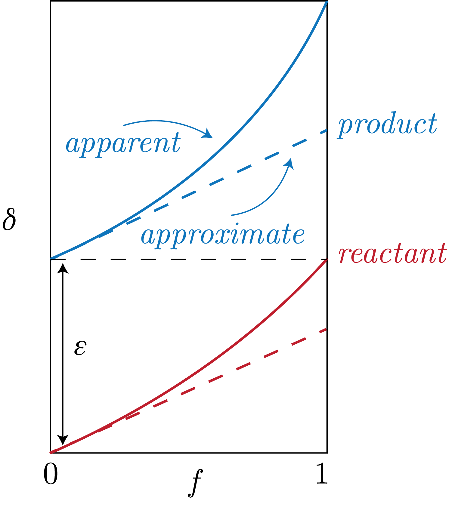

We will be specifically talking about: C, H, O, N, and S. We will consider Li later.
The isotopes are:
\begin{equation}
\text{C}:\: ^{12}\text{C}, ^{13}\text{C}.
\end{equation}
\begin{equation}
\text{H}:\: ^{1}\text{H}, ^{2}\text{H} \left( \text{Deuterium, D} \right).
\end{equation}
\begin{equation}
\text{O}:\: ^{16}\text{O}, ^{17}\text{O}, ^{18}\text{O}.
\end{equation}
\begin{equation}
\text{N}:\: ^{14}\text{N}, ^{15}\text{N}.
\end{equation}
\begin{equation}
\text{S}:\: ^{32}\text{S}, ^{33}\text{S}, ^{34}\text{S}, ^{36}\text{S}.
\end{equation}
We note that the first of each presented above are by far the most abundant in the Earth system.
Important is the relative mass difference here, which we define as:
\begin{align}
\mu = \frac{\Delta m + m}{m},
\end{align}
where $m$ is the abundant isotope and $\Delta m$ is the mass difference between the less abundant isotope of interest and the abundant isotope. (i.e., $^{1}$H is the abundant and $^{2}$H is the less abundant).
We note that the fractionation scales as these relative mass differences, so doing out the math we can get that:
\begin{align}
D: 0.015 \% &\Rightarrow \mu = 2 \\
^{13}\text{C}: 1.11 \% &\Rightarrow \mu = 1.08 \\
^{15}\text{N}: 0.36 \% &\Rightarrow \mu = 1.07 \\
^{18}\text{O}: 0.2 \% &\Rightarrow \mu = 1.12 \\
^{34}\text{S}: 4.22 \% &\Rightarrow \mu = 1.06 \\
\end{align}
So, we can see that the H system is going to fractionate much more than the other systems.
Notation
$\delta$ Notation
We define the $\delta$-notation as, for $A$ the heavy isotope and $C$ the light isotope (as is the standard now and happens in the CHONS that $C$ is also the most abundant):
\begin{equation}
\delta^{A} = \left( \frac{(A / C)_{sample}}{(A / C)_{standard}} - 1\right) \times 10^3.
\end{equation}
Note that we are in per mille.
Then, we have the isotope ratio:
\begin{equation}
R_A = \frac{A}{C}.
\end{equation}
Next, we have the fractionation factor:
\begin{equation}
\alpha_{A / B} = \frac{R_A}{R_B},
\end{equation}
and we say then that:
\begin{equation}
\delta_{A} - \delta_B \simeq \log \alpha_{A / B} \times 10^3.
\end{equation}
We call this difference the approximate fractionation.
We can derive this as follows, starting with the definition:
\begin{equation}
\delta_{A,B} = \left( \frac{R_{A,B}}{R_S} - 1 \right) \times 10^3,
\end{equation}
for $R_S$ our standard ratio as in the $\delta$ notation above. Then, we can plug this into our definition of $\alpha_{A / B}$ to get, after simplifying:
\begin{equation}
\alpha_{A / B} - 1 = \frac{\delta_{A} - \delta_{B}}{\delta_b + 10^3} \simeq \frac{\delta_A - \delta_B}{10^3},
\end{equation}
where we have used that $\delta_B \ll 10^3$.
Using the Taylor Series expansion:
\begin{equation}
\log x = \sum_n^\infty \frac{(x-1)^n}{n} = x - 1 + \frac{1}{2}(x-1)^2 + \frac{1}{3}(x-1)^3 + \cdots,
\end{equation}
for $x \in (-1, 1]$. Then, as $|\alpha-1|\ll 1$, we can approximate as:
\begin{equation}
\log x \simeq x - 1.
\end{equation}
There are a few things that we assume here:
$\alpha$ is very near 1
$\delta_B \ll 10^3$
The ranges of these values are as follows, in [‰]:
\begin{align}
\delta\text{D} &\in -200:+20 \\
\delta^{18}\text{O} &\in -40:+40 \\
\delta^{13}\text{C} &\in -60:+10\\
\delta^{34}\text{S} &\in -50:+40\\
\end{align}
The hydrogen system might break down these assumptions, as we see that the range of $\delta$D ranges from -200 to +20 [‰], with the extrema existing in Carbanaceous chondrites (primitive meteors) and meteoric water.
The meteoric water also has the highest in the oxygen system as well.
The lowest carbon is in biogenic methane.
These relationships can be seen (and the departure that can be propogated to large values given certain system conditions) in Fig. 1.

Fig. 1: The difference between the approximate and apparaent fractionation.
$\epsilon$ Notation
We define the apparaent fractionation as:
\begin{equation}
\epsilon = \left( \alpha_{A /B} - 1 \right) \times 10^3.
\end{equation}
Standards
There are a few standards that are of interest to us.
These are normally historical and are as follows:
H, O: VSMOW (Vienna Standard Mean Ocean Water)
N: Air
C: VPDB (Belemnite)
S: VCDT
We note that we there is no more VPDB and VCDT, but we anchored the current standard to those so that we can extrapolate back to the original standard.
These are come from the fact that it was once very hard to measure so the standards helped to achieve the precision needed.
Fractionations
Mass Differences
The first that causes fractionation is mass difference.
We can think of all of the different configurations of H$_2$O with H, D, and $^{18, 16}$O.
Now, we can do out the masses of each of these configurations.
Then, the molecular velocity of an ideal gas is given by:
\begin{equation}
v = \left( \frac{8KT}{\pi m} \right) ^ {1 / 2}.
\end{equation}
So, we see that:
\begin{equation}
v \sim \frac{1}{\sqrt{m}}.
\end{equation}
Therefore, any process that involves a gas moving aorund, we can get that the relative velocities $v_1 / v_2$ for different masses.
This then means that the diffusion is going to happen at different rates, and therefore the fractionation is proportional to this ratio in a system.
Bonding Strength
We can recall the ZPE differences discussed previously here.
We can then say additionally that:
\begin{equation}
\alpha \sim \frac{1}{T^n}.
\end{equation}
Kinetic Isotope Effect
This occurs in addition to the equilibrium effect.
This occurs when there are incomplete or unidirectional reactions.
A good example of this is the condensation of water from vapour.
We assume first order kinetic reactions here of the form:
\begin{equation}
K = A \exp\left[-E_a / T\right],
\end{equation}
with $K$ being the reaction constant and $E_a$ the activation energy.
This is known as the Arrhenius equation.
Then, we can say that:
\begin{equation}
\frac{\textrm{d}A}{\textrm{d}t} = K_A A,
\end{equation}
\begin{equation}
\frac{\textrm{d}B}{\textrm{d}t} = K_B B.
\end{equation}
Now, we can let $A, B$ be different isotopologues of water, say: H$_2^{16}$O, H$_2^{18}$O.
From above, we know then that we can get the isotope fractionation as, droping the subscript for clarity:
\begin{equation}
\alpha = \frac{K_A}{K_B},
\end{equation}
which then means that:
\begin{equation}
\frac{\textrm{d}B}{\textrm{d}A} = \alpha \frac{B}{A}.
\end{equation}
Then, we can get from our definitions of $A, B$:
\begin{equation}
\log\left[\frac{B}{B_0}\right] = \alpha\log\left[\frac{A}{A_0}\right],
\end{equation}
which becomes, for $B \ll A$:
\begin{equation}
\frac{B / A}{B_0 / A_0} = \left( \frac{A}{A_0} \right)^{\alpha-1},
\end{equation}
and note that $A / A_0$ is our fraction of the reactant remaining, or $f$ as we will see later.